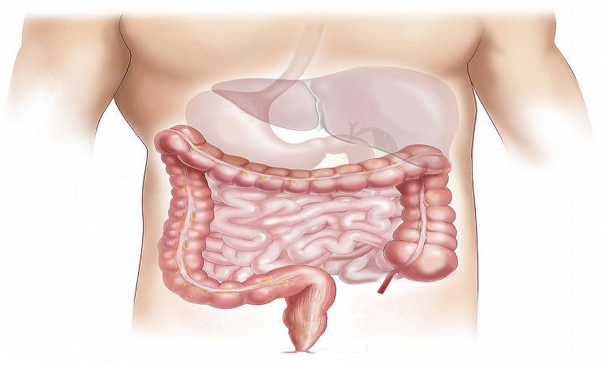

How I Got Rid Of All My Digestive Problems For Good
(Works Every Time!)
Scientists have just discovered constipation is NOT the result of a bad diet or dehydration…
In fact, after using an incredibly powerful microscope to look deep inside the colon’s lining they've realised…
Digestive issues are caused by something terrifying that's eating away at your colon…